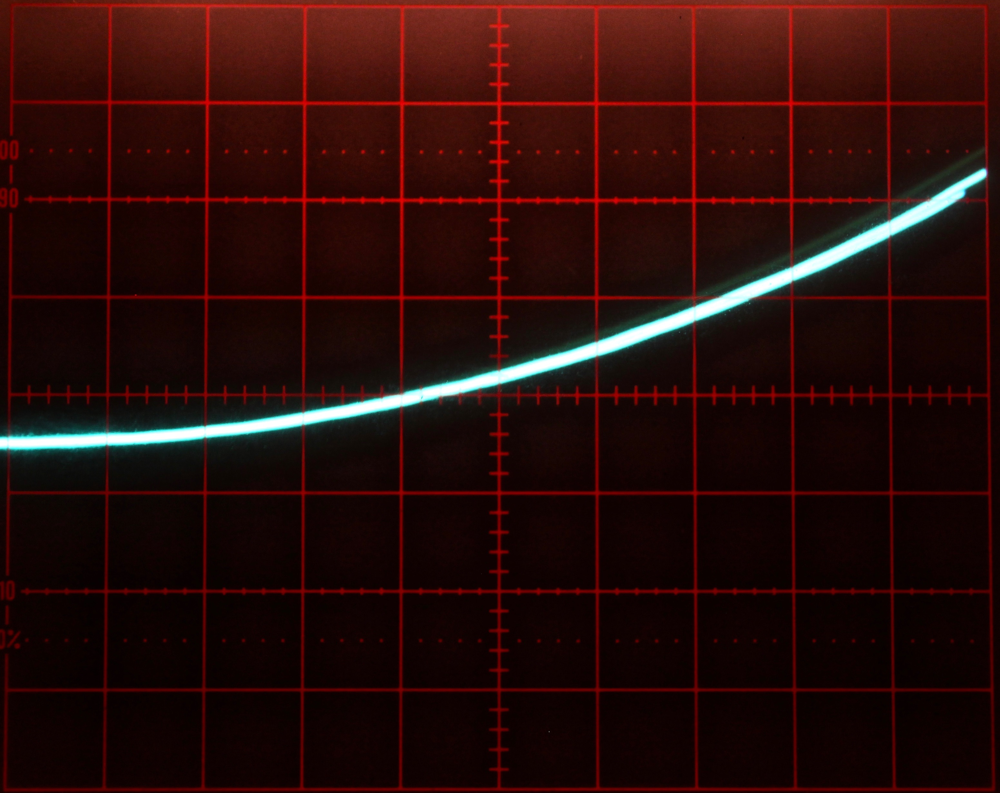
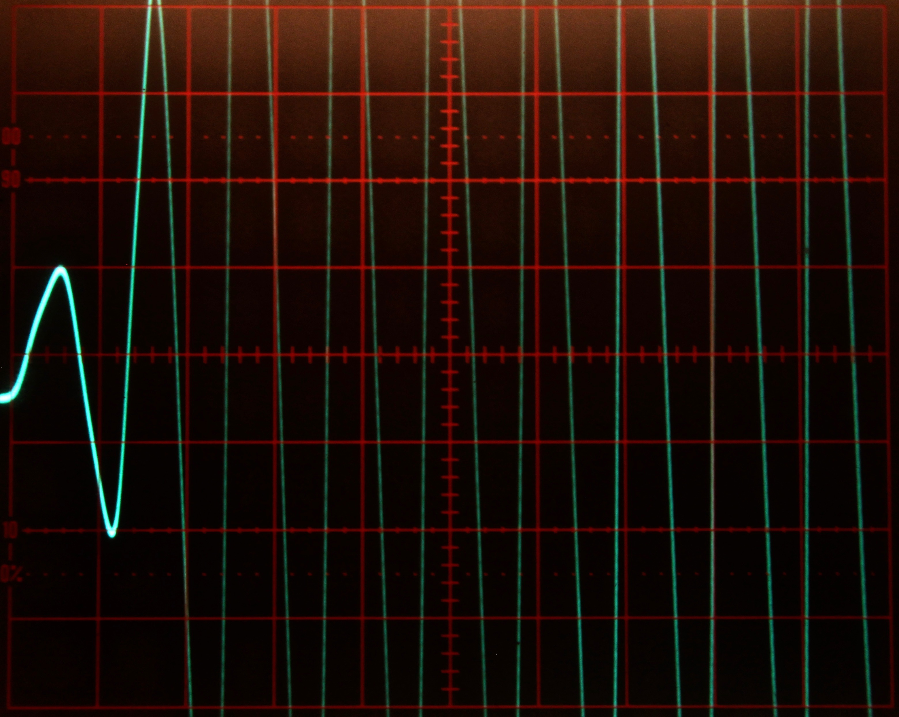
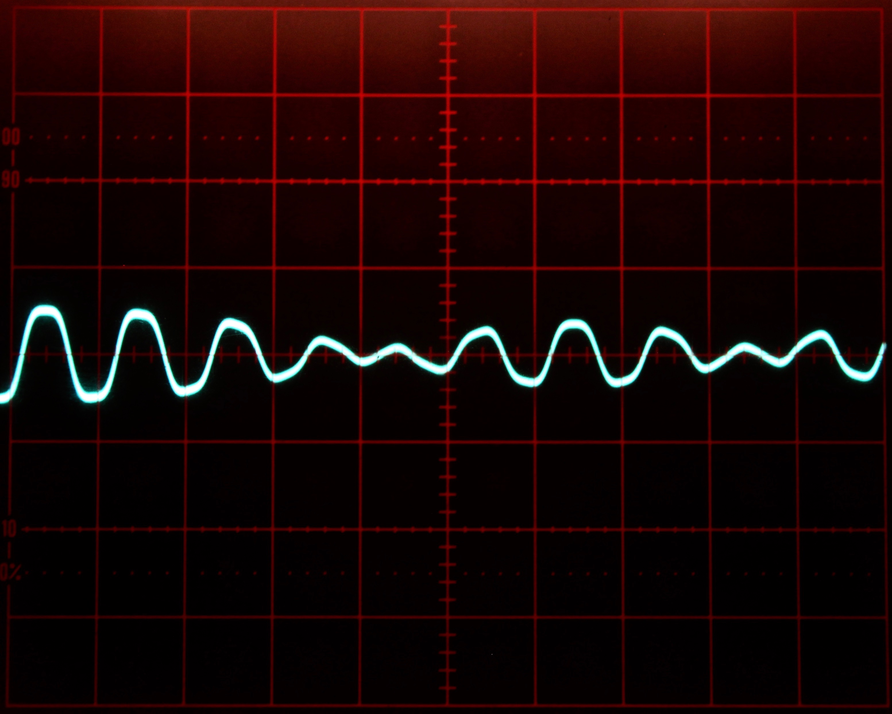
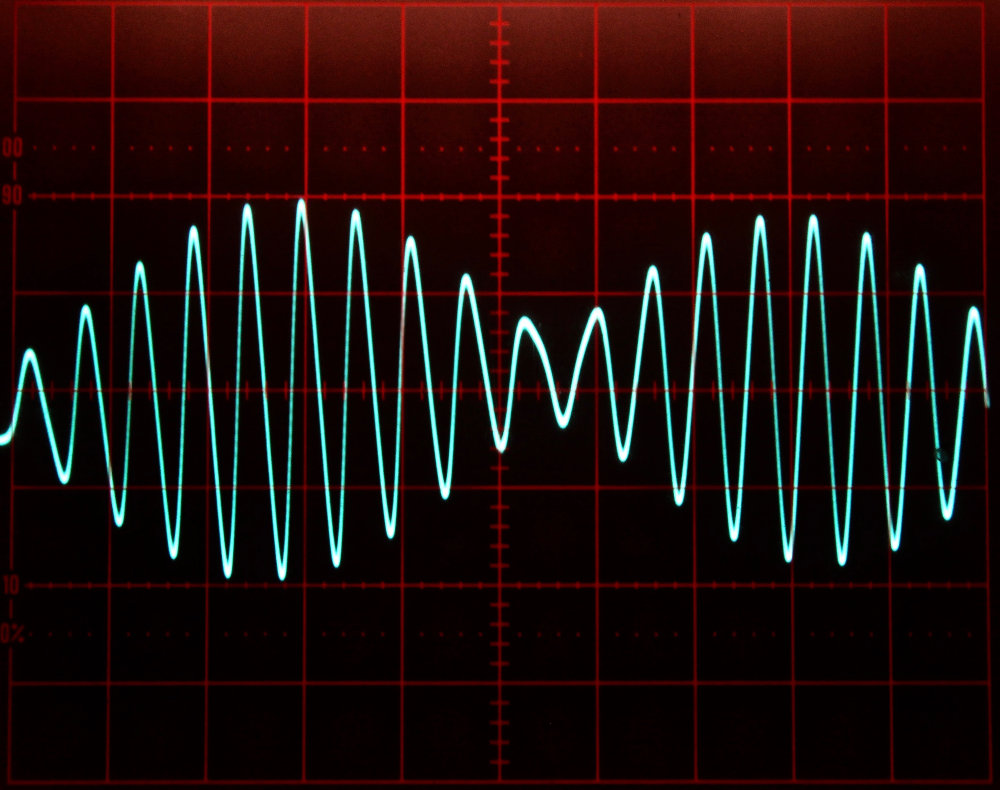
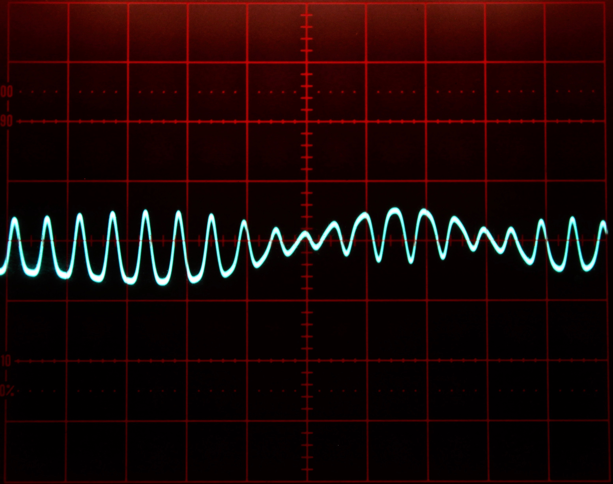
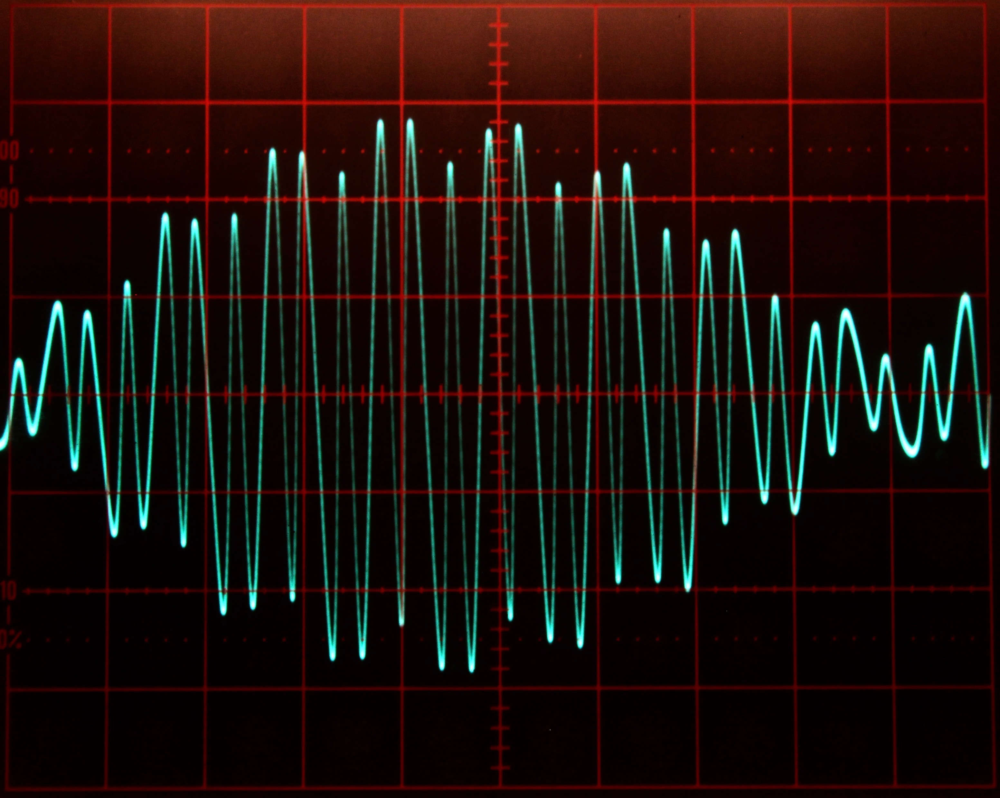
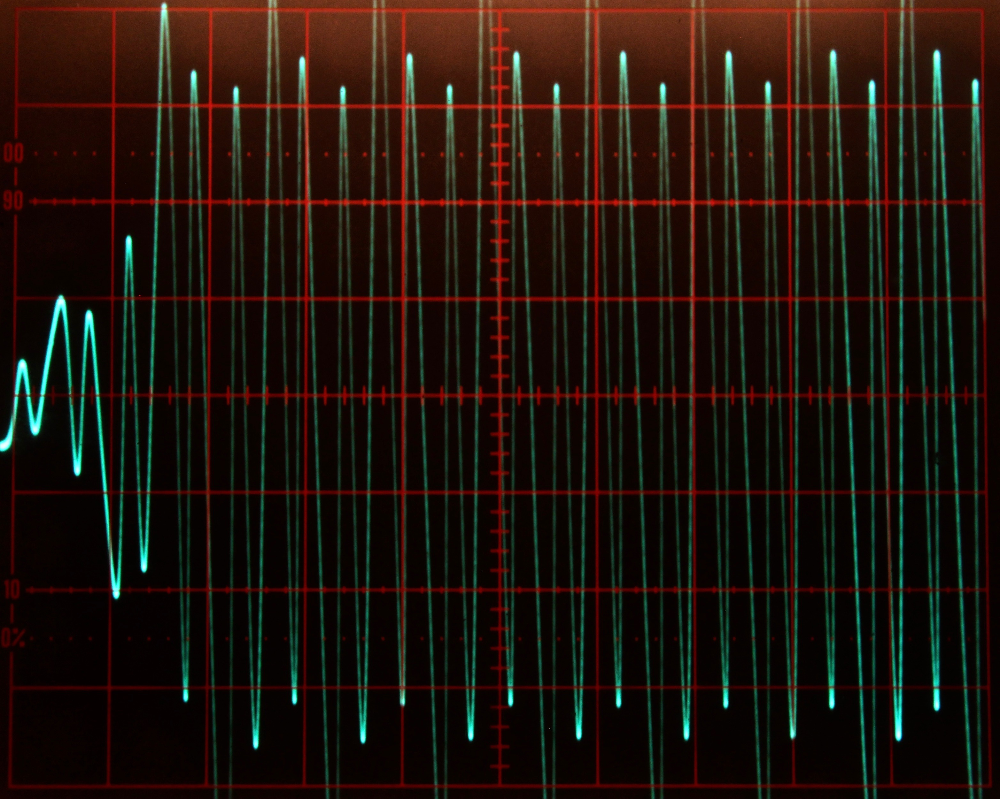

Mathieu’s equation¶
Introduction¶
This application note deals with the well-known Mathieu equation, a linear homogenous second order differential equation with many applications (it can be used to described the vibrations in an elliptic drum, or the behaviour of an inverted pendulum and many more).
The general form of Mathieu’s equation is
with the initial conditions
Following we set
and define a function (1):
to simplify things a bit yielding (2):
leaving out the time as argument of the function \(x\).
At first sight, one might be tempted to implement the function \(x\) by means of a diode function generator but due to the fixed argument range of such a function generator, this approach is not viable. As so often it is much better to generate this function by solving a suitable differential equation. If we differentiate (1) twice, we get (3) and (4):
This yields the following defining differential equation for (1), which will be referred to as (5):
since we have
with (3) and (4).
Scaling and programming¶
In order to derive a computer setup for (2) we will first create a scaled computer program for (5) which can be written without any scaling like this, already closely resembling an analog computer program:
Obviously, we have \(2\leq x\leq 0\) due to (1), so we will start by scaling (6) by \(1/2\) and compensating for this by changing the factor \(4\) in (7) accordingly, yielding
Due to (4) we know that \(-4\leq\ddot{x}\leq 4\), so we will now scale (9) by \(1/4\) and compensate for this in (8):
Now all that is left is \(\dot{x}\) which is in the range of \([-2:2]\) due to (3):
The resulting computer setup for these equations where no function exceeds the interval \([-1:1]\) is shown in figure 1. Keep in mind that the output signal has been scaled down from the interval \([0:2]\) to \([0:1]\) – a fact that we have to compensate for in the second part of the computer setup.
Deriving and scaling the computer setup for (2) is done similarly. The problem here is the rather wild behaviour of the Mathieu equation which makes scaling difficult if \(a\) is allowed to take on values from a rather large interval. The setup shown in figure 2 basically allows values \(0\leq a\leq10\) with the exception of the regions where the equation is unstable.
Results¶
Figures 3 and 4 show some typical solutions for Mathieu’s equation for different increasing values for \(a\). These solutions were obtained with the integrator time constant set to \(k_0=10^3\) and the computer running in repetitive operation. The oscilloscope is set to \(2\) ms per division horizontally and \(2\) V/div vertically.
|  | |
|  |  |
{kind=link}
{kind=link}
Figure 3: Typical solutions of Mathieu’s equation for some values 0 a/10 1
|  |  |
|  |  |
{kind=link}
{kind=link}
Figure 4: Typical solutions of Mathieu’s equation for some values 0 a/10 1